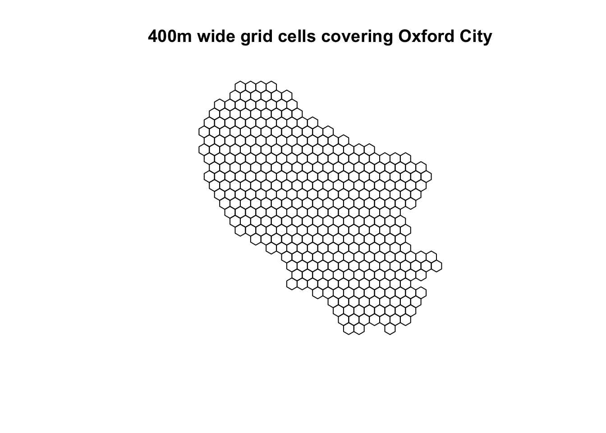
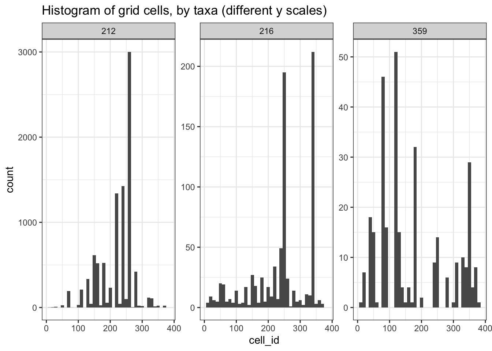
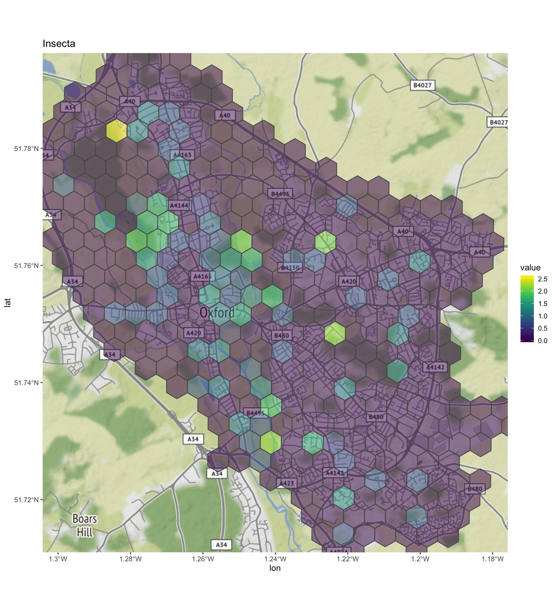
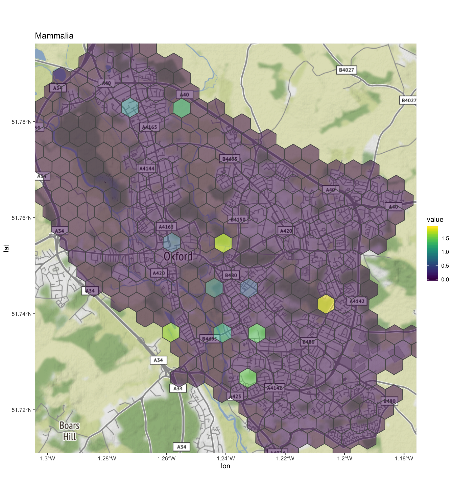
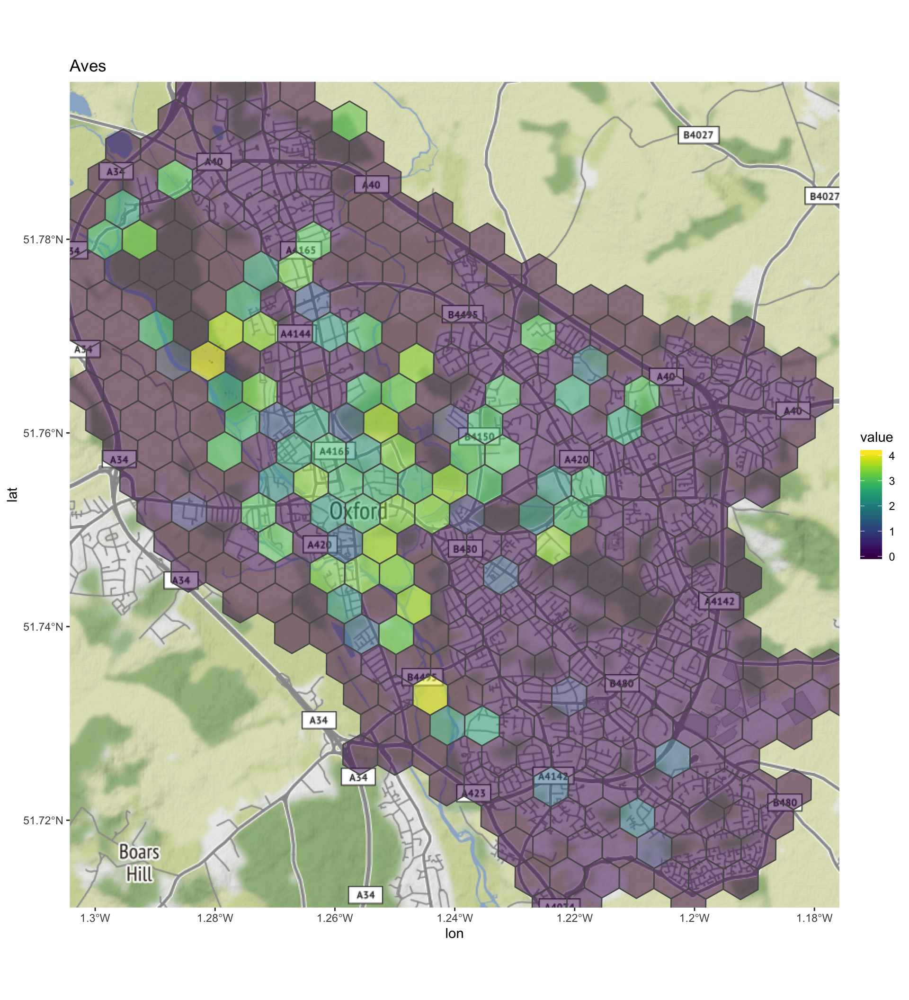

The Global Biodiversity Information Facility (GBIF) allows scientists to record and share species occurence information from around the world. Four our study here we will download all occurence records based on the following criteria:
It is likely that the GBIF data will exhibit sampling bias in a number of ways. In general, people are more interested in birds than plants!
# Load libraries
library(tidyverse)
library(rgbif)
library(sf)
library(osmdata)
library(reshape2)
# Clear environment
rm(list = ls()) First we need to obtain a shapefile for Oxford City, our study area. We can use osmdata from the Open Streetmap foundation to achieve this.
# Get bounding box for Oxford
bb <- getbb('Oxford, U.K.')
# Query OSM for sf data
q <- opq(bbox = bb) %>%
add_osm_feature(key = 'boundary', value = 'administrative') %>%
osmdata_sf()
# Convert Oxford polygon to WKT text so that we can query GBIF
ox_WKT <- st_as_text(q$osm_multipolygons$geometry[q$osm_multipolygons$name=="Oxford"])Now we have our spatial query set-up we can query GBIF.
# Setup taxon search keys
# Aves: classKey = 212
# Mammalia: classKey = 359
# Insecta: classKey = 216
classKey <- c(212,359,216)
# Query Oxford species groups
ox_sp <- map(
.x = classKey,
~ occ_search(geometry = ox_WKT,
geom_big = "bbox",
classKey = .x,
basisOfRecord = 'HUMAN_OBSERVATION',
year = '2014, 2019',
limit = 10000,
hasCoordinate=TRUE,
fields = c("scientificName", "speciesKey", "year","decimalLatitude","decimalLongitude", "classKey" ))) %>%
rbind()Now we can manipulate the query from GBIF into a data structure useful for subsequent processing. We have three groups of data in the GBIF object ox_sp, each is grouped by classKey.
# Combine retuned GBIF list queries into a single dataframe
oxf_sp_df <- ox_sp %>% map_df( ~pluck(.x, "data"))
# Let's look at the data
head(oxf_sp_df)## # A tibble: 6 x 6
## classKey speciesKey scientificName decimalLongitude decimalLatitude year
## <int> <int> <chr> <dbl> <dbl> <int>
## 1 212 2490719 Turdus merula… -1.25 51.8 2019
## 2 212 2492462 Erithacus rub… -1.25 51.8 2019
## 3 212 2487603 Certhia famil… -1.26 51.8 2019
## 4 212 5231763 Prunella modu… -1.25 51.8 2019
## 5 212 5229493 Garrulus glan… -1.25 51.8 2019
## 6 212 2475532 Alcedo atthis… -1.24 51.8 2019#How many observations do we have per taxa?
oxf_sp_df %>% count(classKey) ## # A tibble: 3 x 2
## classKey n
## <int> <int>
## 1 212 9481
## 2 216 806
## 3 359 313We need to generate a grid over the Oxford survey area. This will be used to calculate a biodiversity index for each cell within the grid.
# Create a
ox_poly <- st_as_sf(q$osm_multipolygons %>% filter(name=="Oxford")) %>%
# Transform coordinates to planar
st_transform(27700)
# Make a grid of Oxford city
grid_sf <- st_make_grid(
# Oxford City boundary
ox_poly,
# Cell width in m
cellsize = 400,
# Cells are hexagons
square = F)
# Plot it
plot(grid_sf, main = "400m wide grid cells covering Oxford City")
Now let’s map species locations to a grid cell.
# Creat sf locatons for species locations in GBIF object
ox_sp_sf <- oxf_sp_df %>% st_as_sf(coords=c("decimalLongitude","decimalLatitude"),
# Set crs to WGS84
crs = 4326) %>%
# Reproject to plannar coordinates
st_transform(27700)
# Add a cell id to the Oxford grid
grid_sf <- grid_sf %>%
st_sf() %>%
mutate(cell_id = row_number())
# Generate intersection
intersect <- st_intersects(
# sf list of species occurences
ox_sp_sf,
# sf grid of Oxford
grid_sf,
# map points to gridcell
prepared = T) %>%
# return dataframe
as.data.frame()
# update column names
names(intersect) <- c("spec_no", "cell_id")
# Create a single table mapping species occurences to cells
grid_species_df <- ox_sp_sf %>%
# Create dataframe from result
as.data.frame %>%
# Join with grid/coordinate intersection
cbind(intersect) %>%
# We don't need column spec_no
dplyr::select(-spec_no) %>%
# Group and arrange by grid cell ID
group_by(cell_id) %>%
arrange(cell_id)
# Plot histogram for each taxa
grid_species_df %>%
# Count by cell_id
ggplot(aes(x=cell_id)) +
# Set histogram bin size
geom_histogram(binwidth=10) +
# More Aves taxa records
facet_wrap(~classKey, scales = "free_y") +
ggtitle("Histogram of grid cells, by taxa (different y scales)") +
theme_bw() 
For each taxa, Calculate the Shannon index for each grid cell
# Load vegan to generate shannon index
library(vegan)
# Function to count the number of species for each grid cell
n_species_cell <- function(df) {
df %>%
group_by(cell_id,speciesKey) %>%
# Count a given species within a cell
tally() %>%
# We need to ungroup to complete
ungroup() %>%
# For cells with now species, fill with zeros
complete(cell_id = 1:nrow(grid_sf), fill=list(n=0))
}
# Count species count grid for each taxa
results <-grid_species_df %>%
# Nest by class key
nest(-classKey) %>%
# Calculate count by speces and store in separate column
mutate(n_species_cell = map(data, ~n_species_cell(.x)))
# Function to Create a table of cells by species occurence counts
cell_diversity <- function(df)
df %>%
pivot_wider(
id_cols = c("cell_id", "speciesKey"),
names_from = speciesKey,
values_from = n,
values_fill = list(n=0)) %>%
# We can remove cell_id once we have a complete table
dplyr::select(-cell_id) %>%
# Calculate shannon diversity for each cell
diversity("shannon") %>% as.data.frame()
# Calculate shannon diversity in each cell per taxa
results <- results %>%
mutate(cell_diversity = map(n_species_cell, ~cell_diversity(.x)))
# Add cell shannon diversity to the grid cell sfc
out <- results %>%
pluck("cell_diversity") %>%
as.data.frame()
# Name the columns with their classKey
names(out) <- c("Insecta", "Mammalia", "Aves")
# melt data to create one spatial dataset for diversity by grid cell
diversity_grid_sf <- out %>%
# Add cell_is as index
mutate(cell_id = row_number()) %>%
# melt data with cell_id as index var
melt(id.vars = "cell_id", measure.vars = c("Insecta","Mammalia","Aves")) %>%
# join with sf grid polygons
full_join(grid_sf) %>%
# Convert dataframe to simple feature collection for plotting
st_as_sf()We can add a Google background map of Oxford to see where the biodiversity hotspots are.
library(ggmap)
register_google(key="****", write = T)
ox_basemap <- get_map(bb)ox_basemap <- readRDS("oxford_basemap")Now we have a Google basemap, let’s visualise this.
library(ggmap)
library(viridis)
# Create map objects and nest in data frame
diversity_grid_sf <- diversity_grid_sf %>%
nest(-variable) %>%
mutate(plot = map2(data,
variable,
~ ggmap(ox_basemap) +
# Overlay grid data
geom_sf(data = .x,
# Fill with Shannon index for each grid cell
aes(fill=value, geometry = geometry),
inherit.aes = F,
alpha = 0.5) +
# Title of plot
ggtitle(.y) +
scale_fill_viridis() +
# Convert grid data to WGS84
coord_sf(crs=st_crs(4326))))
# Now plots and data are nicely stored together
head(diversity_grid_sf)## # A tibble: 3 x 3
## variable data plot
## <fct> <list> <list>
## 1 Insecta <tibble [378 × 3]> <gg>
## 2 Mammalia <tibble [378 × 3]> <gg>
## 3 Aves <tibble [378 × 3]> <gg># Plot the results
print(diversity_grid_sf$plot)## [[1]]
##
## [[2]]
##
## [[3]]
We can see some interesting results here. As this is not a controlled and randomised set of data, clearly there is significant sampling bias. That being the case, each taxa class clearly show some interesting results when the spatial Shannon diversity is plotted as above: